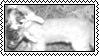
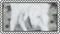
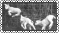

columbina hyposelenia, also known as the moon maiden and by her former fatui codename the damselette, is the moon goddess worshiped by the frostmoon scions in nod-krai. she was born on hiisi island 500 years ago, and was subequently adopted by the frostmoon scions as their god under the name kuutar. she eventually chose to leave the frostmoon scions after growing disillusioned with them, and instead joined the fatui, where she became the third of the eleven fatui harbingers. after realizing that they only sought her power, she left the fatui and began hiding in the silvermoon hall at hiisi island to rest and recover her strength.



diary log
24.02.2026 finished building the website and completed the main layout and styling. but i plan to improve and refine it in the future if i find things that can be made better.
23.02.2026 reviewed HTML fundamentals and CSS styling.
22.02.2026 started coding again after a month of semester break.